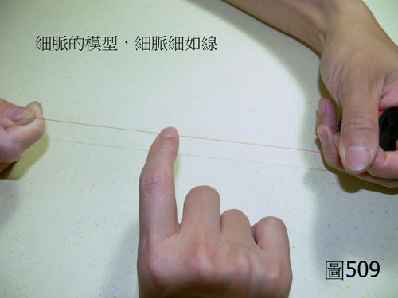
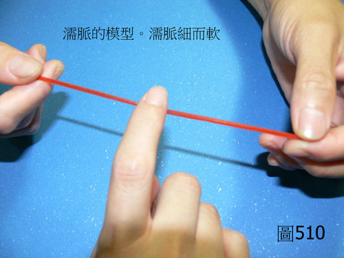

脈理醫理學 33.20：濡脈
作者：陳建元
說明：
脈象型態浮細而軟的，叫做「濡脈」。濡脈是一個脈學的專有名稱，當浮、細、軟三者結合在一起而一同出現的時候，叫做「濡脈」。所謂的浮，是指脈位位於第1～2層的範圍內；所謂的細，是指一條直如細線的意思；所謂的軟，是指柔軟的意思，也就是說雖然一條直如細線，但是這條細線並不會太過堅硬，而是呈現柔軟的表現狀態。（〈圖509〉是細脈的模型，細脈細如線。）（〈圖510〉是濡脈的模型，濡脈細如線，但按起來是柔軟的，就像按橡皮筋一樣的柔軟。）【註：〈圖510〉中因為找不到又細又柔軟的東西來當模型，所以姑且用橡皮筋的柔軟來當作模型，但要注意的是濡脈摸起來時，不會像橡皮筋那樣的粗，而是細如細線。】【註：脈法裡面有兩個脈象很難掌握，一個是緩脈，一個是濡脈，兩個都是呈現「柔軟」為特點，只是一個的脈寬較寬，一個的脈寬細如線，可一同對照比較來學習，會比較好掌握。】


本質和病機：
濡脈的病機有兩個，主外感風濕、主陰陽氣血諸虛。濡脈的病機比較簡單，或是在外感風濕的時候，則濕氣過度濡潤而礙束脈道之流通，故成濡脈；若是在內傷病的時候，因為氣血陰陽不足諸虛為病，脈道久失濡養溫煦，故脈象浮細而柔軟。
兼脈：
兼數則兼熱。兼遲則兼寒。兼澀則兼瘀血。兼黏則兼毒。
六部濡脈：
右寸濡：在外感風濕時為頭重；在內傷病時為短氣、為喘、為胸悶。
右關濡：在外感風濕時為身體沉重、為四肢沉重；在內傷病時為腹悶、為腹脹、為大便黏膩、為消化不良。
右尺濡：在外感風濕時為筋骨沉困沉重；在內傷病時為便秘、為腰膝無力、為相火不足。
左寸濡：在外感風濕時為頭重；在內傷病時為短氣、為喘、為胸悶胸痛、為心悸、為健忘。
左關濡：在外感風濕時為筋骨痛；在內傷病時為目昏乾澀、為筋骨酸困無力、為膽小易驚。
左尺濡：在外感風濕時為筋骨痛；在內傷病時為便秘、為腎功能偏低、為小便餘瀝、為膀胱無力小便無力。
治療藥物：
如果是外感風濕的話：半身以上可用羌活，半身以下可用獨活。
肺脈：防風、蒼耳子、絲瓜絡。
脾脈：防風、秦艽、蠶砂、絲瓜絡。
心脈：絡石藤。
肝脈：豨簽草、蠶砂、松節、海桐皮、五加皮、絲瓜絡、威靈仙、絡石藤、桑枝、白花蛇、烏梢蛇、祈蛇。
兩尺脈：獨活、松節、海桐皮、五加皮、威靈仙、絡石藤。
如果是氣血陰陽不足的話：找歸入各部脈的補益氣血陰陽的藥物即可。
【引用請先來信告知徵求同意，若有涉及販售營利等商業行為，版權所有拷貝盜用必究。】
【藥王脈學講壇】http://blog.xuite.net/drjychen/twblog